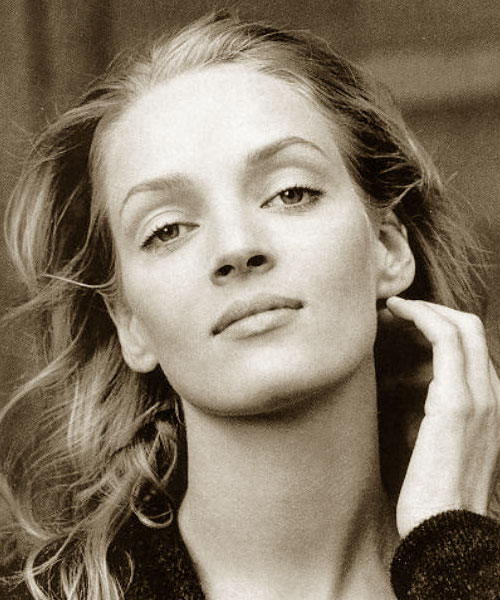
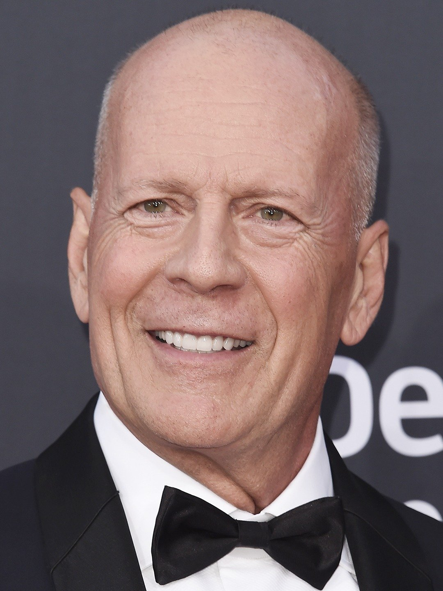

John Travolta è: Vincent Vega.

Uma Thurman è: Mia Wallace.
Samuel L. Jackson è: Jules Winnfield.

Bruce Willis è: Butch Coolidge.
Quentin Tarantino è: Jimmie Dimmick.

John Travolta (Englewood, 18 febbraio 1954) è un attore, cantante e ballerino statunitense. Ha ottenuto la fama internazionale con i film La febbre del sabato sera (1977), per il quale ha ricevuto una candidatura per l'Oscar al miglior attore, e Grease (1978). Nel 1994 ha interpretato Vincent Vega nel film Pulp Fiction, ricevendo una seconda candidatura al Premio Oscar al miglior attore. Nel 1995 si è aggiudicato il Golden Globe per il miglior attore in un film commedia o musicale per la sua interpretazione in Get Shorty. Ha ricevuto altre due candidature ai Golden Globe (oltre a quelli già citati) per i film I colori della vittoria (1998) e Hairspray - Grasso è bello (2007). In campo televisivo, è noto per la sua interpretazione di Robert Shapiro nella serie antologica American Crime Story (2016), per la quale ha ottenuto il plauso della critica e una candidatura al Premio Emmy come migliore attore non protagonista.
Uma Karuna Thurman (Boston, 29 aprile 1970) è un'attrice e modella statunitense. È particolarmente nota per l'interpretazione di Mia Wallace nel cult di Quentin Tarantino Pulp Fiction, per la quale ha ricevuto la candidatura al Premio Oscar 1995 come miglior attrice non protagonista, oltre a nomination ai Golden Globe, BAFTA e Screen Actors Guild Award. Ha collaborato sempre con Tarantino in Kill Bill (suddiviso in Kill Bill: Volume 1, del 2003, e Kill Bill: Volume 2 del 2004), film che le hanno fatto ottenere una nomination ai BAFTA come miglior attrice protagonista e due nomination ai Golden Globe come miglior attrice in un film drammatico. Per Gli occhi della vita ha vinto nel 2003 il Golden Globe come miglior attrice in una mini-serie o film tv.
Samuel Leroy Jackson (Washington, 21 dicembre 1948) è un attore e produttore cinematografico statunitense. Ha recitato in numerosi film di successo, ma il pubblico lo associa generalmente ai film diretti da Spike Lee e Quentin Tarantino; con Lee ha preso parte a Aule turbolente (1988), Fa' la cosa giusta (1989), Mo' Better Blues (1990), Jungle Fever (1991), Oldboy (2013) e Chi-Raq (2015); con Tarantino Pulp Fiction (1994), Jackie Brown (1997), Django Unchained (2012) e The Hateful Eight (2015), mentre è apparso per un cameo in Kill Bill: Volume 2 (2004), come voce narrante in Bastardi senza gloria (2009) e come attore nel film scritto da Tarantino Una vita al massimo (1993). Ha inoltre interpretato altri tre ruoli di rilievo: il Maestro Jedi Mace Windu nella trilogia prequel di Guerre stellari, il direttore dello S.H.I.E.L.D. Nick Fury nel Marvel Cinematic Universe (sia in diversi film del franchise sia in alcuni episodi della serie Agents of S.H.I.E.L.D.), e lo spietato Preston Packard in Kong: Skull Island (2017). Nei primi anni della carriera ha lavorato con Bruce Willis in diverse pellicole tra cui Pulp Fiction (1994), ricevendo per questa una nomination all'Oscar al miglior attore non protagonista (vinto quell'anno da Martin Landau per Ed Wood)[1], Die Hard - Duri a morire (1995) e, successivamente, i due hanno condiviso lo schermo anche in Unbreakable - Il predestinato (2000) e Glass (2019).
Walter Bruce Willis (Idar-Oberstein, 19 marzo 1955) è un attore, produttore cinematografico e musicista statunitense. Dopo alcuni ruoli minori a inizio anni ottanta e l'esordio da co-protagonista nella serie televisiva Moonlighting (1985-1989), ha raggiunto la notorietà presso il grande pubblico interpretando John McClane nel film Trappola di cristallo (1988), primo capitolo della serie cinematografica Die Hard.
Quentin Jerome Tarantino (Knoxville, 27 marzo 1963) è un regista, sceneggiatore, attore e produttore cinematografico statunitense.
Iniziò la sua carriera come regista all'inizio degli anni novanta, raggiungendo il successo di critica con il film di debutto Le iene. Con il successivo Pulp Fiction arrivò la consacrazione, vincendo la Palma d'oro al Festival di Cannes e conquistando l'Oscar per la miglior sceneggiatura originale ai Premi Oscar 1995 condiviso con Roger Avary, oltre a sette nomination. Nel 2004 fu presidente della giuria alla 57ª edizione del Festival di Cannes e nel 2010 alla 67ª Mostra internazionale d'arte cinematografica di Venezia. Il 24 febbraio 2013 si aggiudicò la sua seconda statuetta per la migliore sceneggiatura originale per il film Django Unchained ai Premi Oscar 2013. Dal 21 dicembre 2015, il suo nome è presente tra le celebrità della Hollywood Walk of Fame.
Tarantino è stato definito un «regista DJ» per la sua capacità di riuscire a combinare stili diversi fondendoli insieme in una nuova opera. Il regista e storico del cinema Peter Bogdanovich lo ha definito «il regista più influente della sua generazione».